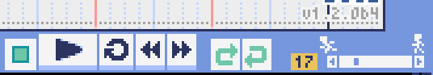
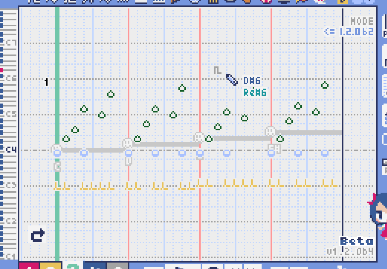
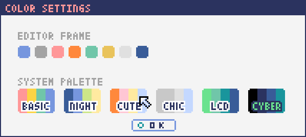
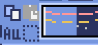
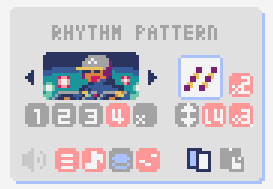
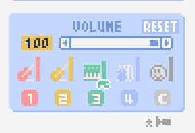
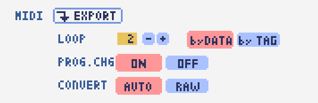

This is the official manual for the personally developed music software Lovely Composer.
Lovely composer is a tool that aims to make music and sound effects like 8-bit game consoles easy and fun.
The content may differ from the latest version, but in that case, please read as appropriate.
This software is a music software, but it is also a sequel to the game “Dungeon Witches - Girls Back Home -”, and its characters will also appear.
Support, bug reports and requests are accepted at the following.
Please introduce your work with the #LovelyComposer tag of twitter and so on!
In a certain forest … Witches lived quietly in a small house.
The witches should not be found by outsiders. Only the delicious food delivered by the villager Thomas is relied on.
But one day Thomas suddenly changed. Not only he don’t bringing food, but also beating witch’s house strongly.
He was brainwashed to defeat witches by the “Chant” of the “Grizzlia Choir”!
The house is protected by magic, so it’s okay, but the witches will soon be unable to eat food.
So, the witches decided to use the magical instrument “Lovely Composer” to bring Thomas back with the power of music, to regain food and life!
The basic screen layout looks like the image above.
Each part will be explained later.
When the question mark is red at the bottom left of the screen, balloon help is displayed neighbour to the mouse cursor.
A text description of the area where the mouse cursor is located is displayed at the bottom of the screen. (It is a more detailed than the display in the balloon.)

At the bottom of the screen, there are buttons for playing songs. The functions are as follows in order from left to right.
Stop … Stops playing the music. If you press the stop button while stopped, you will return to the beginning of the music. (You can also stop by pressing the space key during playback.)
Play … Plays the music. (You can also play by pressing the space key while stopped.)
1 page repeat (circular arrow) … Press the button to make it green so that loop playback is performed only on the currently open page. (This setting is a temporary playback setting that is not saved for each song.)
Fast forward … Moves to the next page.
Rewind … Moves to the previous page.
Loop start (Left side) … Press the button to turn green to set the return destination when looping to the current page. If you press it again in the green (on) state, it will turn gray (off) and the setting will be canceled.
Loop end (Right side) … Press the button to turn green to set the last part of the loop playback to the current page. The rest is the same as above.
Tempo slider … You can set the playback speed of the music. The smaller the number (the cursor moves closer to the left), the faster the playback speed.
If the tempo is set to “Specify by page” in the music settings, a broken link icon will be displayed above the number. In this case, the tempo will be set separately for each page.

You can also moves current page with the bitmap scrollbar below the play button. The dots in each color represent musical notes. The currently selected page is displayed brightly, and the playback position is displayed as a white vertical line. The number on the upper right is the number of pages. The loop position is also displayed with an arrow icon.


There is a music selection button at the top left of the screen.
The numbers display the currently open song numbers.
You can open the next music by pressing the “+” button and the previous song by pressing the “-” button.
You can select the music number from 0 to 31. (* Plans to increase in the future)
You can select a folder by pressing the folder icon on the far left.
A folder for users (LC_USER) and a folder for sample songs (LC_SAMPLE) are prepared in the default. (Also “_SFX” folders is prepared for sound effects.)
When the sample music folder is open, the music number is displayed in red as shown in the below image, and the file cannot be saved. please note.
If you have created a music in a write-protected state, use the music copy function to copy it to another music number.

The folder selection screen is as follows.

You can open the folder by selecting the folder name and pressing OPEN.
If you press the folder open icon at the bottom left, the actual folder containing the music data will be opened with Explorer on the OS side.

It located the right of the music selection button.
The functions are as follows in order from left to right.
Save music file
Undo
Redo
Lovely Composer uses an auto save method, and music data is automatically saved in a file when moving music or closing the application.
Therefore, it is not always necessary to press the file save button, but if you press the button, the music data will be written to the file soon.
So it is better to press it for avoid the data lost by abnormal termination of the application etc.
The actual music data is saved in the “Lovely Composer folder / music / selected folder / music number.jsonl” file.

This is the main part of music editor, you can create a music by inputting and editing notes.
The display format called the piano roll, similar to the staff notation of music, the vertical axis is the pitch and the bars are separated by vertical lines. (It can also be changed to a staff-style display.)
The number in the upper left is the current page number.
Use the fast forward button, rewind button, and page scroll bar to move pages.
Loop position, mute status, etc. are also displayed.
In compatible playback mode, which version is compatible is displayed in the upper right.
The tone icon is displayed in the color of each part. By default, it is displayed as a small icon.
“Middle C (Do)” is the C4. It’s displayed by the horizontal dotted line.
By default, the notes of the non-selected part is display by pale color.
The roles of the normal part and the code part are slightly different.

You can display and edit the selected part by selecting any of 1/2/3/4/C with the part selection button at the bottom left of the score.
If you select any of 1/2/3/4, you can display and edit the normal tone part. The specifications of each part are the same.
If you select C, you can display and edit the code part. (C is an acronym for code = Chord)

When the normal part is selected, the tone list is displayed at the top of the score.
By left-clicking on the tone list, you can select the tone to use with the pen/brush tool.
The tone list is divided into multiple pages, and you can switch to another page with the “+” and “-” buttons.
The numbers display the current page number.
So far, the types of tones are roughly divided into the following.
Also,
You can audition the selected tone by right-clicking on the score.
The tone can be changed for each note.
Each tone is actually made up of “basic waveform + effect”. You can check which tone is made up of which combination in the help display at the bottom of the screen.
Tones with the same basic waveform can be heard to connect the sounds, by arranging them side by side.

When the chord part is selected, the chord selection tool is displayed on the upper side of the score.
The selection of the basic chord is set by the face icon displayed on the upper side of the score, and the additional note is set by the button to the right of it.
The additional notes is displayed as a hat, and the power chord is displayed as an icon with a face color.
If you specify a chord in one place, it will continue to play the same chord until the next chord appears. (The black line will extend automatically)
If you want to stop the extend, specify the mute (“x” mark) at the position you want to stop.
You can audition the chords by right-clicking on the score.
While “Rhythm” is displayed at the top, the rhythm pattern selected on the current page is used for playback, and for Tone, only the square wave is played.
The pitch of the chord is displayed as a thick line, and each constituent note of the chord is displayed as a thin line.

When the PRO switch at the top of the image is turned on (red state), a part of the screen will be switched and various buttons and advanced functions will be displayed.
In Pro mode, you can switch between note input, volume input, and pan input with the buttons in the image to input on the score.

You can change the display settings of the score with the button on the right side of the score.
The functions are as follows in order from left to right.
Switching between piano roll display / staff like style display
Resize note icon
Turn on / off the display of chord names and the notes display of the sounds actually played in the rhythm pattern.
Switching the layer display method of the part (Layer transparent display / All layers normal display / Only selected layer display)
Background color setting in the window of the below image, specify the color of the editor and the color of the entire screen (system palette color).
Pro mode switching
The staff notation style display only changes the background image and does not display the correct staff notation (because it is a piano roll base, the lines may not be evenly spaced.)


The number in the upper right corner of the score displays the maximum number of notes per page.
If you press the “+” button, you can increase it by 1 and set it up to 32.
If you press the “-” button, you can decrease by 1 and set to a minimum of 1.
The maximum number of notes is also displayed as a vertical line on the score.
When the playback position bar crosses this vertical line, it moves to the next page.

If you set “by page” in the music settings, the broken link icon is displayed and you can set the number of notes for each page individually.

The bitmap scroll bar can be used not only for page navigation but also for editing music data on a page-by-page basis.
You can copy and paste the selected page with the button on the upper left. (Ctrl + C, Ctrl + V are also acceptable)
You can also delete it with the Delete key.
The operation target (focus) with the shortcut key is displayed in the border color. (Currently, switching only between the score and the bitmap scroll bar)
The focus can be switched by clicking the target part.
By pressing the selection tool button at the bottom right, you can select multiple pages and operate them all at once.
You can move it by dragging the selection, and you can also duplicate it by dragging while holding down the Alt key.
Press the mode button at the bottom left to switch the operation target of page-by-page copy.
All (default)
Musical score data and rhythm pattern settings only (settings such as page tempo and number of notes are not copied)
Musical score data only
Only one part selected in the score data (can be copied to another part)
Rhythm pattern setting only
Page settings only (copy only settings such as tempo and number of notes for each page)

This function limits the pitches that can be entered according to certain rules, making it easier to enter musics with a specific scale.
The pitches that cannot be entered are displayed on the keyboard.
Also, when the icon selected, the sounds that are incremented one by one on that scale will be previewed.
The items are as follows in order from top to bottom.
(unlock scale)
Major scale
Minor scale
White key only
Black key only
Ryukyu scale
Gagaku scale
Whole tone (whole tone interval / skip one note)
Chord (only the pitch used in the chord can be used)
Magical Scale 1 (Excludes dissonant sounds of selected chords)
You can move the key up and down with the “+” and “-” buttons.
The two scales below are special scales that change depending on the chord entered in the chord part. If you select these, the key cannot be changed.
The scale function is disabled while you hold down the Ctrl key.
This is useful when you want to temporarily input an unscaled pitch.

It is a function that adds various rhythms and accompaniment to the chords entered in the chord part. (Therefore, if no chord is entered, it’s will not work and nothing will sound.)

The picture above shows the currently selected rhythm pattern, which you can change with the left and right triangle buttons.
The default three-line icon only plays chords purely in chords, but changing to a different pattern will also add rhythm.
There are 4 types of sub-patterns for each, and you can choose one from the 1/2/3/4 at the bottom of the picture. The selected ones are displayed in color, and the others are displayed in gray.
The button to the right of the 4th sub-pattern is the playing speed of the rhythm pattern (number of bars per page). x1 plays 1 bar per page, x2 plays 2 bars per page, and x4 plays 4 bars per page.
When grayed out, the value of “Number of bars per page” in the music settings is used.

The rhythm pattern sound performance consists of four parts, and each performance can be turned on / off individually with the button at the bottom left of the image.
The icons are as follows in order from left to right.

This function allows you to play the chord constituent sounds one by one (arpeggio) instead of playing them at the same time.
This is a popular technique because the number of simultaneous pronunciations is very limited on 8-bit game consoles and it is difficult to play chords at the same time.
If the icon image is in the state of three lines, arpeggiator is disabled.
And if you select one with several dots lined up, arpeggiator is enabled.
Plays the pitch of the arpeggio like a sequence of dots.
The button on the right is the playing speed of the arpeggio (number of bars per page). x1 plays 1 bar per page, x2 plays 2 bars per page, and x4 plays 4 bars per page. When grayed out, the value of “Number of bars per page” in the music settings is used.
The buttons are as follows in order from left to right.
Up and down arrows … Upside down pattern
L … Arpeggio length (L = Length … note based)
O … Add an octave change (O = Octave … does not move an octave when the color is gray)

Displays the waveform of the sound currently being played like an oscilloscope.
Since the synthesis result of all the output sounds is displayed, it responds not only to music but also to sound effects.
MIX … Displays the sounds of the left and right channels combined.
L & R … Displays the sounds of the left and right channels in different colors in the same area.
L / R … Displays the sounds of the left and right channels in separate areas.

You can change the playback volume, mute each part, or specify solo playback.
The settings here are not saved for each music.
In addition, the currently playing tone, etc. are displayed visually.
Left-click the part number to mute each part, and right-click to specify solo playback. Muted parts are also displayed as icons in the part selection section and on the score.
You can reset all settings to the initial values with the RESET button.
Pro mode adds volume and output channel display to the visual display. You will also be able to set the volume slider to 0.
The visual display shows the final result (same as the actual sound) by multiplying the music data and the values specified in the mixer.
The button at the bottom right of the volume is an extra function for greenback shooting (chroma key compositing) for shooting movies, etc., and fills background elements other than dancer-related with one color.

You can adjust the volume and output channel for each part of the entire music at once.
For the volume slider in the center, raise or lower the value specified for the volume on the score.
In addition to left dragging, you can also increase or decrease by rotating the mouse wheel.
Since the volume of each note does not exceed 0 to 15 (0 to F), the volume does not always change according to the value specified by the slider.
For the top output channel, only the displayed channel outputs sound.
Click left or right to switch between LR / L / R.
The slider on the upper right raises or lowers the pitch of all parts (transpose).
If you drag, it will change by about 3, but you can increase or decrease it by 1 by rotating the mouse wheel.
It is also interesting to try changing the pitch by listening to the musics you made or sample musics.
Press the part number button to enable or disable the volume slider and channel settings.
It can be used to check the adjustment result.
You can reset all settings to the initial values with the RESET button.
If L is specified for the pan on the score side and R is specified for the mixer side, the output sound will be silent.
In that case, the volume display will be lightly grayed out.

The characters of “Dungeon Witches” will sing and dance to the tempo of the music, and will perform various productions.
It also indirectly acts like a metronome.
Left-click to change to another animation pattern, drag to move, right-click to zoom in / out.
The singing pitch is the pitch of the note of the selected part.
If the tempo of the music and the speed of the dance are too different, the music setting “bars per page” may be different from the actual music data.

This is the screen for music setting.
In order from the above items,
And the below settings are the part that normally does not need to be set.
Pan Law settings … Center and left / right volume balance settings
Compatibility mode setting … If specified, the song data will be played according to the specifications of that version (used only to prevent old data from playing strangely).
It has become.
The picture on the lower right has no function speciallly.
The tempo is not an arbitrary BPM specification, but a speed specification method like old game music.
The BPM calculation formula is as follows, excluding the error.
BPM = (30 / speed) * bars per page * 30
In the initial state, 120 BPM = (30 / 30) * 4 * 30.

The screen switching tab at the top left of the screen. Left-click to switch to the selected screen.
In order from the left items,

This screen is for outputting music data as an audio file or MIDI file.

ALL MUSIC / 1 MUSIC button … Select whether to output all musics as a file or output only the selected music. If you select 1 MUSIC, you will be able to select the target music with the music number selector on the right. (The initial value is the number of the music selected on the music edit screen.)
Folder open icon … Open the export destination folder with Explorer on the OS side.
AUTO button … When enabled (in color display), the export destination folder is automatically opened when the export process is completed.

EXPORT button … Executes audio file export with the current settings.
LOOP … Set the number of times to play the loop section. (If it is 1, it will not be played repeatedly)
by DATA … Generates audio data for the specified number of loops.
by TAG … By embedding loop position information as a text tag in audio data, it supports infinite loop playback with a continuous intro in loop tag compatible software such as RPG Maker. (The number of loops cannot be specified.)
SAMPLING … Specifies the sampling frequency. 22050Hz is the default. (Currently, sound is processed internally at 22050Hz, and setting it to 44100Hz does not improve the sound quality on the data.)
CHANNEL … Specify whether it is stereo output (2ch) or monaural output (1ch). Stereo output is the default.
FORMAT … Select the audio file format. In the case of WAV, it is an uncompressed Wave format file, and other than that, it is a compressed audio format, and it is designed to be converted after the Wave file is output. (Wave file is also generated)
QUALITY … Sets the sound quality (compression level) of compressed audio. The higher the number, the higher the sound quality, but the larger the file size. The conversion parameters are grayed out on the right. (Valid only when other than WAV is selected in FORMAT)
When specifying tags in a loop method, OGG or Wave is basically recommended as the output file format. (Other than that, there are few compatible software, and even if it is compatible with MP3, skipping during a loop is unavoidable due to the specifications.)
We have confirmed that loop playback was possible with OGG for RPG Maker VX or later, and Wave for Unity. (At the time of 1.2.0 release. Operation is not guaranteed.)
When the loop is tagged, audio data for two laps is always generated. This is to connect the sounds continuously without any discomfort at the moment of returning to the loop start position from the end of the music (to prevent something like skipping).

EXPORT button … Executes MIDI file export with the current settings.
LOOP … Set the number of times to play the loop section. (If it is 1, it will not be played repeatedly)
by DATA … Generates MIDI data for the specified number of loops.
by TAG … By embedding loop position information as a text tag in MIDI data, it supports infinite loop playback with a continuous intro in loop tag compatible software such as RPG Maker. (The number of loops cannot be specified.)
PROG.CHG. … Specifies whether to generate a program change (tone change). (If not enabled, all sounds will have the same tone.)
CONVERT … When AUTO is specified, MIDI data that has been processed such as connecting consecutive notes is output. (Default setting) / For RAW, the raw data of Lovely Composer is replaced with MIDI data and output.

When starting for the first time after downloading Lovely Composer, the above warning may be displayed and the “Run” button may not be displayed in addition to “Do not run”. In this case, press “Details” at the location indicated by the arrow, and the “Execute” button will be displayed.
You can transfer music data by copying the music data folder of the previous version to the music data folder of the new version.
The song data folder is located under the Lovely Composer folder / music /. (The music data file is “music number.jsonl (00.jsonl etc.)” in each folder.)
If you want to migrate your preferences, copy the app_settings.json file, which is in the same location as the executable file, to the new version.
Be careful not to make a mistake in the direction of the data copy! If you make a mistake and reverse it, the musics you have made will be lost. It is safe to make a backup in advance just in case. (There are plans to make it easier to update the version in the future)
If the waveform overflows and collapses on the output monitor, the sound will crack at that part.
The cause is that the sound is too loud. So it will be solved if you do not overlap the sounds too much.
If you turn down the volume with the master volume at the bottom right of the screen, it will disappear temporarily.
Avoiding tones with large waveforms is less likely to cause problems.
We want to prevent sound cracking as much as possible without the user being aware of it, but it is also a difficult because it is a fundamental problem of digital audio.
An error message will be displayed on the score as to why it cannot be opened, so please check it.
When a music for which file write protection is set, such as a sample music is opened (The music number is displayed in red), the file cannot be saved. Select a user folder, etc. (If you have already entered the data, press the copy button of the music and then paste the music to another music number.)
Check if the music data file has write permission on the OS side.
General operation
Music edit screen
Play / Stop … Space
1-page loop setting … O (Oh)
Go to next page … -> or Shift + X
Go to previous page … <- or Shift + Z
Part selection … 1,2,3,4,5
Tool select
Pen … Q
Eraser … W
Brush … E
Selection … R
Chord select
Mute … Shift + A
Major … Shift + S
Minor … Shift + D
Dim … Shift + F
Aug … Shift + G
SUS4 … Shift + H
7th … Shift + C
9th … Shift + V
Power … Shift + B
Next tone list … Ctrl + W
Previous tone list … Ctrl + Q
Open the next song … Ctrl + 2
Open the previous song … Ctrl + 1
Parallel movement of the mouse cursor … Hold down Shift
Volume input on the Note Input tab … Hold down Alt and use the Pen tool
Duplicate selected notes … Alt-drag selection
Copy of rhythm pattern settings … Alt + C
Paste rhythm pattern settings … Alt + V
Software keyboard
Performance … Lines of A and Z are the rows of piano keys
Raise one octave … Page Up
1 octave down … Page Down
Temporarily raise one octave … While holding down of up arrow
Temporarily lower by one octave … While holding down of down arrow
File write protection setting … Ctrl + Alt + L
Number of parts: User 4 parts + chord rhythm pattern (tone can be changed for each note)
Song length: 32 notes * 256 pages (up to 1024 bars)
Range: C1 to B7 (MIDI standard, 7 octaves)
Tones: 50 patterns (when counted as one with the combination of “basic waveform + effect”)
Volume: 16 steps (1 step 2 dB, 0 is silence)
Channels: Stereo (Pan is only Center / Left / Right)
Supports Loop play with intro
Wave file export
MIDI file export
Supports MIDI keyboard (for sound confirmation / simple performance. Data input, recording, UI operation, etc. are not possible)
Auto save
Data created in the old version can be opened in the new version, but not the other way around. (For example, music data created in ver.1.0 series can be read in the same way in ver.1.1 series. However, conversely, data created in 1.1 cannot be opened in 1.0.)
Musics created in Pro mode will play in the same way even when Pro mode is OFF.
If the data specifications change, the second version number (1.x.0) will change. For updates that do not change the data specifications, the version number at the end will change. (1.1.x etc.)